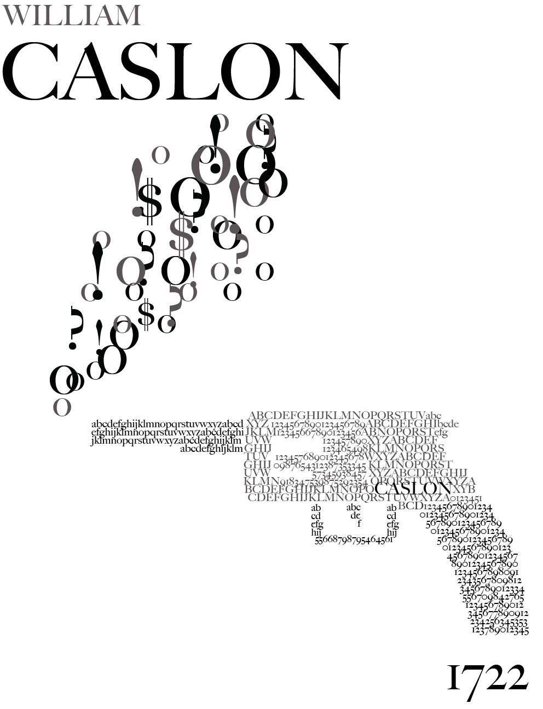
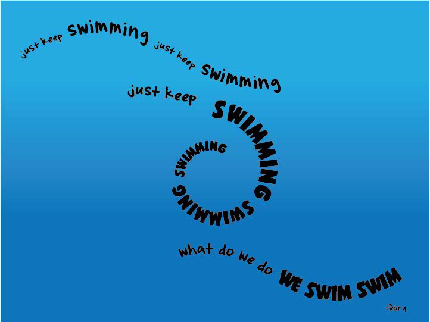
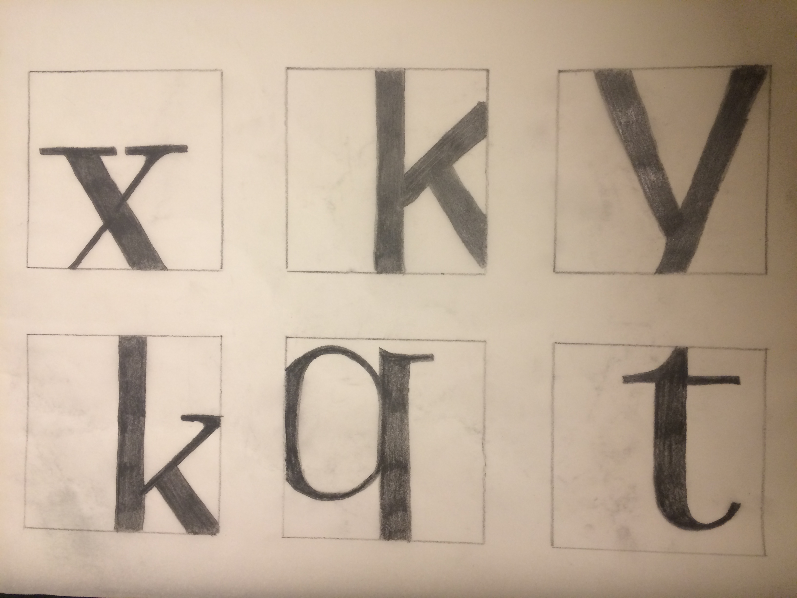
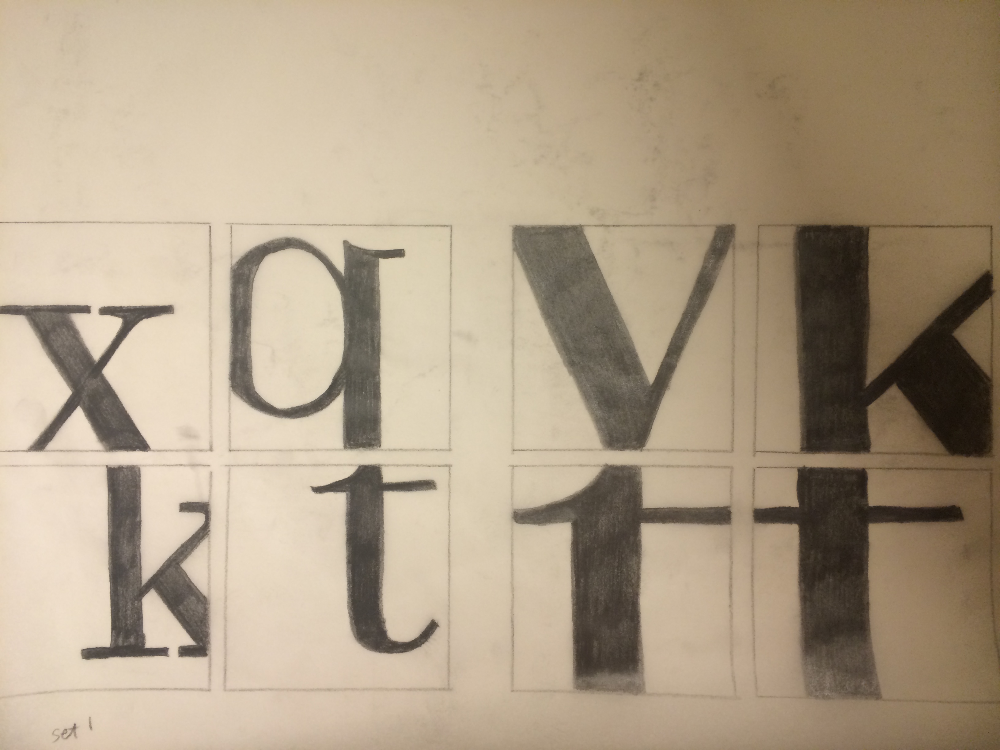
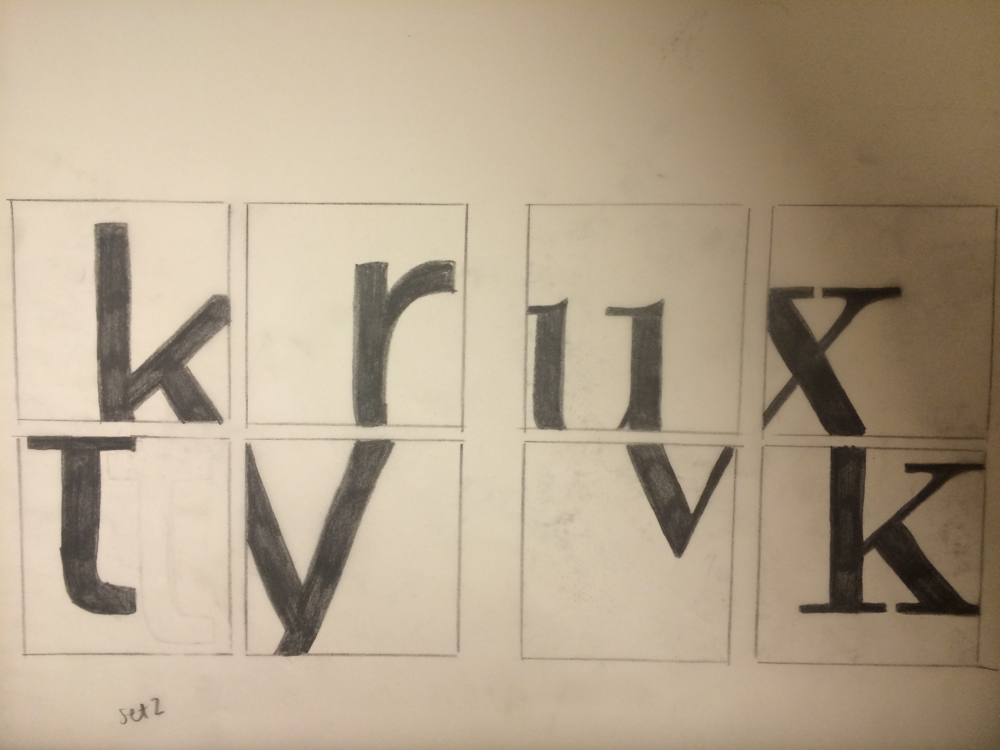
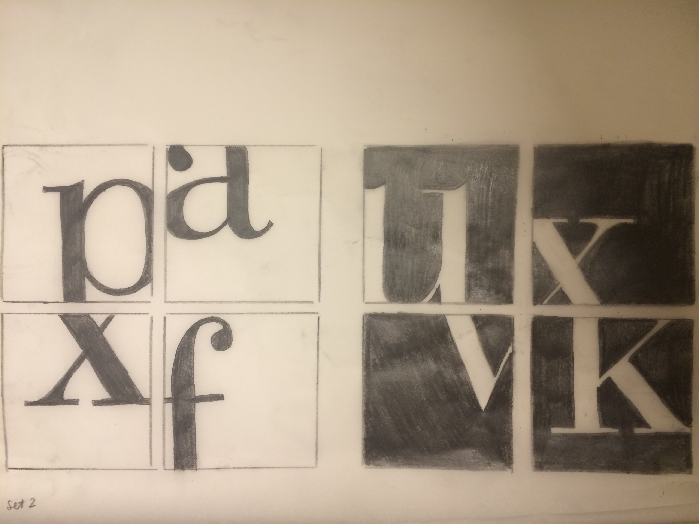
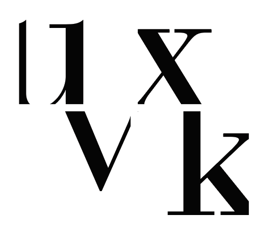

Letterforms and Type
Study the anatomy of different types of typography and composition.
Caslon
I created a poster to communicate the essential characteristics of letterforms unique to the Caslon typeface.
Illustrator
Quote
Express a quote as an interesting design. Make the typefaces, colors, visual placement and context relate to the quote and feeling of the subject matter.
Illustrator
Minimal Letterforms
Examine the form and function of letterforms. Investigate visual characteristics and aspects of composition.




For the final composition, I decided to use Bauer Bodoni.
Illustrator
